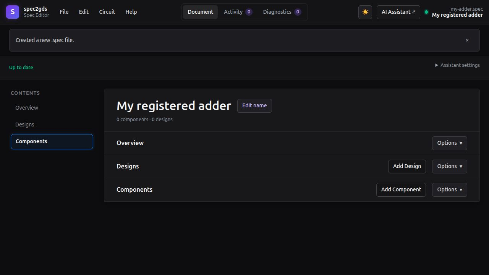

CORE 01 / 09 · 5 MINUTES
Create your first Spec
Create a Spec and reopen the same saved file.
Before you start
Spec Editor and a writable server-local directory. No model key or compiler is required.
The prepared start is an empty reference. For this lesson, create a separate fresh my-adder.spec file.
Actions
- Open the Spec Editor URL supplied with your environment. Use Contents to move between Sections. On a small screen, open Menu for the application menus.
- Select File → New Spec. Enter My registered adder as the Spec name. Enter a new absolute server-local path below your tutorial run directory, ending in
my-adder.spec. Select Create. Do not select an existing start file as the new destination.

- Inspect the document cover, Components group, and Designs group. Hover over the active document name to inspect the path. A Spec is the logical document; its
.specfile is the saved archive. - Close this browser tab. Open Spec Editor again. Select File → Open Spec, enter the same absolute path, and select Open. This command opens a file on the service host, not a file on your browser computer.
- Confirm the name and path. Accepted source changes save automatically. Use the save control inside an open draft; the File menu has no separate Save command.


Check your result
The reopened Spec has the same name and path. Its Components and Designs groups are empty.
Try it yourself
Use Edit name on the cover to change the readable name. Save and reopen it. The path stays the same.
If it fails
If New Spec reports an existing destination, choose a fresh filename. Use Open Spec to inspect an existing file. Do not delete or replace it.
Continue
NEXT GUIDEDefine a Component and its portsReference: spec editor · Complete example